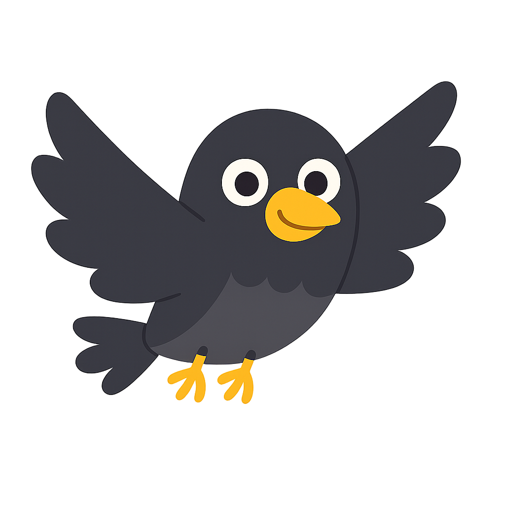

A06 · NIVEAU 8
La mer, juste un peu plus vivante.
Premier essai sur le décor existant du niveau 8. Le paysage ne bouge pas : seuls de légers reflets animent la mer.



Aucun défilement, zoom, nuage ou nouvel obstacle ajouté. L’effet reste derrière les éléments de jeu. Rien n’est intégré aux niveaux sans validation.
Revoir A05 →